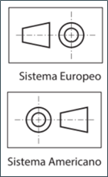

TEMA 1. VISTAS Y SECCIONES
d) Sistemas de proyección ortogonal
Tarea
Para la disposición de las diferentes vistas en papel, se utilizan en la industria automotriz y aeroespacial, dos tipos principales de proyección ortogonal:
a)Sistema Europeo o método de proyección del primer diedro.
b)Sistema Americano o método de proyección del tercer diedro.
Siempre que quieras identificar en qué sistema está representada la pieza de análisis, busca en la parte inferior del plano, los símbolos de la figura 4.

Fig. 4. Sistemas de proyección ortogonal: Europeo y Americano. Fuente: (Calavera & Jiménez, 2016).
Obra publicada con Licencia Creative Commons Reconocimiento Compartir igual 4.0